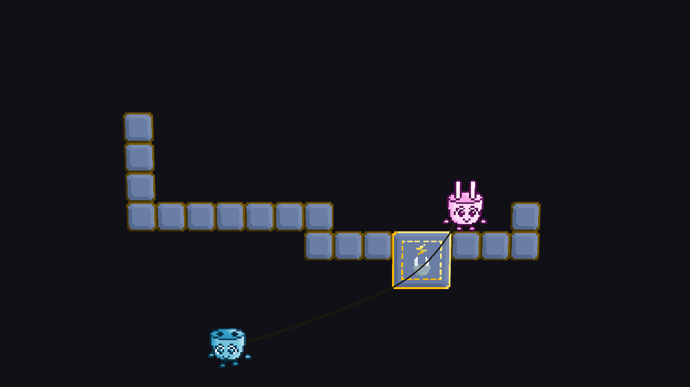
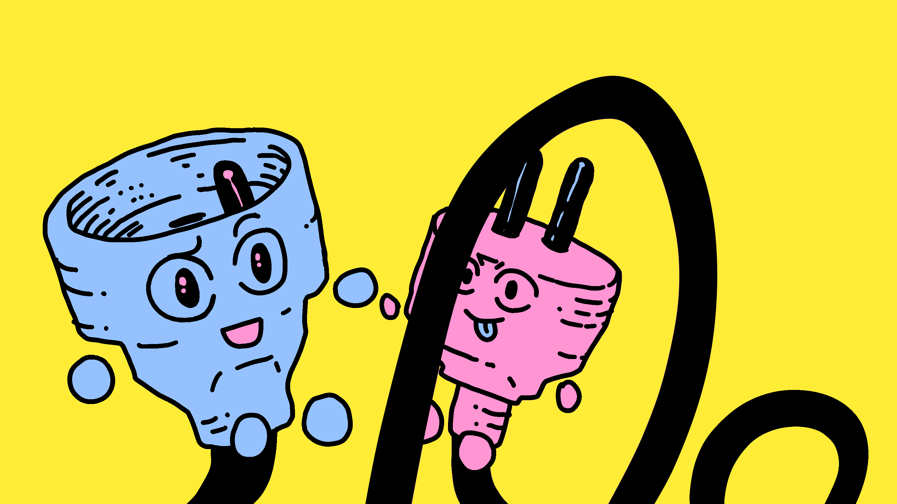
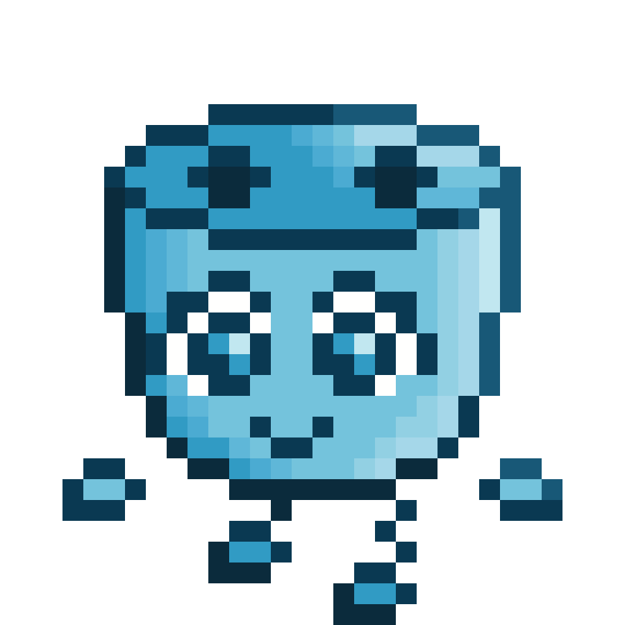
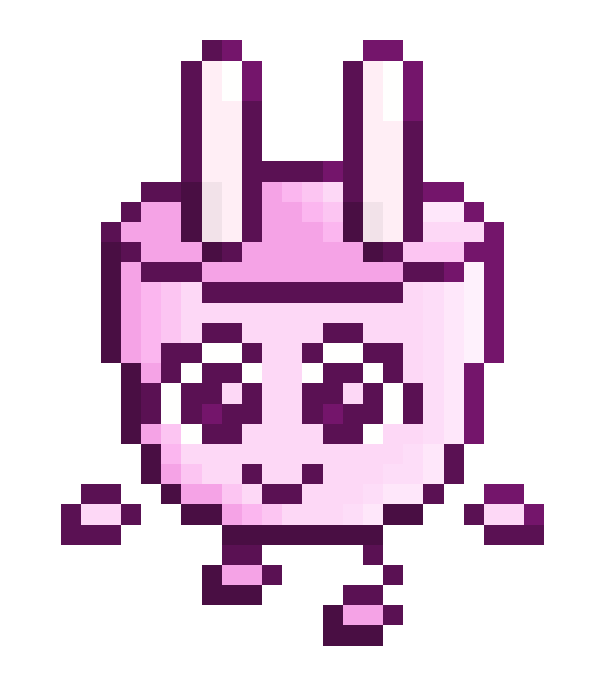

EXTRAS
MÉCANIQUES
Un câble relie les joueurs. Il permet de se suspendre à son coéquipier, empêche les deux joueurs de s'éloigner. Son élasticité vous sera utile dans les phases de plateformes, à vous de découvrir la meilleure façon de l'utiliser!

Lorsque vous êtes sur un générateur, vous êtes chargés. Votre coéquipier reçoit le courant par le câble qui vous unit, et peut alors activer des objets électriques.
CONTRÔLES
Pour se déplacer, utilisez WASD (sauter, aller à gauche, s'accroupir, aller à droite). Ces contrôles s'appliquent à tous les personnages que vous controlez. En d'autres mots, dans le cas du multijoueur local, il permet de contrôler les deux personnages. Dans celui du multijoueur en ligne, il permet de contrôler Yu (le personnage cyan) si vous créez la partie, ou Wu (le personnage rose) si vous la rejoignez. En multijoueur local, OKL; correspondront à Yu uniquement tandis que ceux de Wu seront les flèches. Un menu permettant de quitter la partie et modifier ses paramètres est également disponible en appuyant sur Échap.
Images
@ tumblr : @impiousgherkin — Image d'accueil

Logo de VOLTZ
Icône de VOLTZ

Animation de marche de Yu

Animation de marche de Wu